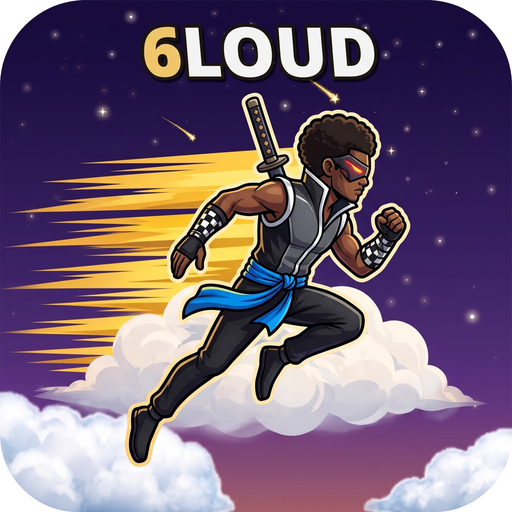

6loud is an endless runner played in the browser. Your fighter sprints across real clouds on their own — all you control is the jump. No levels, no finish line: the run just gets faster the longer you stay in it.
Runs right in your browser — no download, no install. On iPhone: open it in Safari, tap Share, then “Add to Home Screen” to play it like an app.
Keith Cole and 6lade have a song called “6loud” — 6lade rapping about being on cloud 9. The game takes its name from the song, and its whole world from the idea: a crew of chibi shinobi racing across the tops of real clouds, high above everything.
Your runner auto-runs. The only control is the jump button — easy to learn, hard to master.
A tap is a short hop. Hold and you float higher and longer — hold longer still and the hop turns into a flip, then a full dive-roll. The gap decides which one you need.
Come up just short and your runner grabs the edge of the next cloud and pulls up. Close counts.
Each jump adds to your score. Survive longer, jump more, score bigger.
Beat the high score and you enter your initials, classic arcade style — the board remembers.
There are no levels. One endless run that keeps speeding up until it ends you. How long can you stay in?
The fighters of Shinobi Brawl, shrunk down to chibi size. They run with their own run cycles and jumps from the fighting game — nothing redrawn, the same fighters in a whole new kind of fight: against the fall.
The moment your run passes your own best distance, the sky celebrates: the screen flashes, NEW HIGH SCORE lights up, the battle beat drops in — and 6lade charges blue, sparks rising off him, for the rest of the run. Every run starts on the daylight beat. The crown has to be earned again.
Your best also goes up against the world: the global leaderboard tracks the top 10 distances from every player, live. Take the crown at home — then take the board.
6loud is live — free, in your browser.
Built light for phones. New beats, boards and celebrations land here as the game grows.